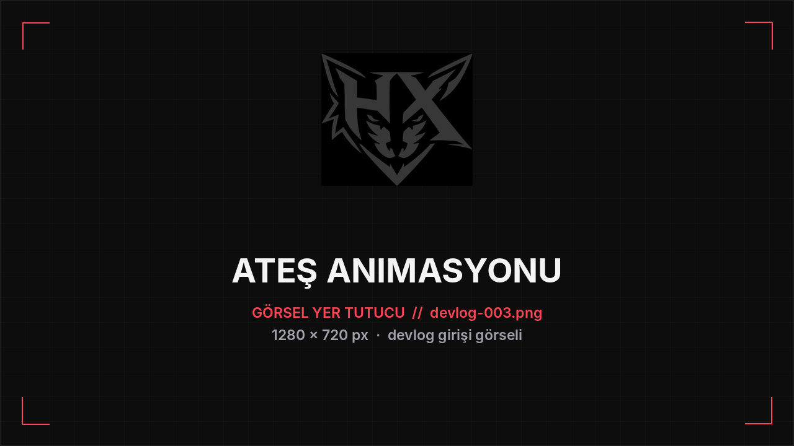

DEVLOG #003
Ateş animasyonu sisteme bağlandı
- Silah ateşleme animasyonu karakter animasyon blueprint'ine bağlandı.
- Ateş ederken animasyon oynuyor, tuş bırakılınca karakter yumuşak şekilde idle pozuna dönüyor.
- Geçişler sıfırdan elden geçirildi; takılma ve pozun "atlama" sorunu giderildi.
Teknik notlar
- Animasyon blueprint'i ateş katmanıyla genişletildi.
- Geri dönüş (blend-out) süresi ince ayarlandı.
- Sıradaki adım: ateş sesi ve geri tepme.
